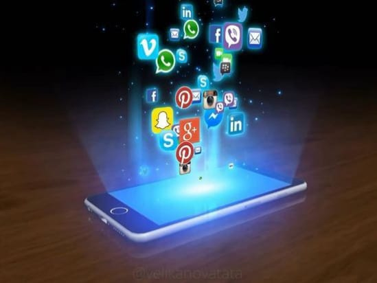
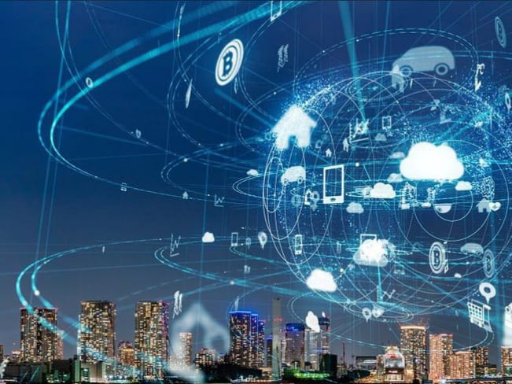
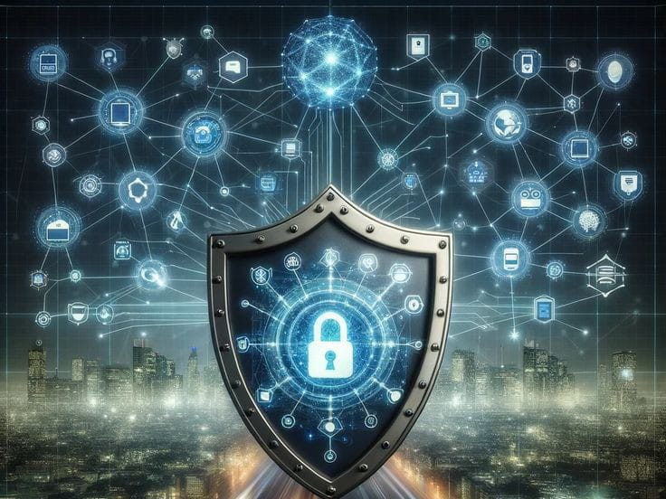

Dampak Teknologi Terhadap Keamanan Data Di Kehidupan Sehari-Hari
Ditulis oleh Arneu Raysa. pada 03 November 2024.
Di era digital seperti sekarang, teknologi semakin mendominasi setiap aspek kehidupan kita. Dari bangun tidur hingga tidur kembali, hampir semua aktivitas kita tak lepas dari penggunaan perangkat digital dan internet. Mulai dari komunikasi, belanja online, hingga menyimpan informasi pribadi seperti data bank dan kesehatan semua terhubung dengan dunia maya. Namun, di balik kenyamanan yang ditawarkan teknologi, muncul ancaman serius terhadap keamanan data yang tak boleh kita abaikan. Artikel ini akan membahas bagaimana perkembangan teknologi memengaruhi keamanan data kita dalam kehidupan sehari-hari dan langkah apa yang bisa diambil untuk melindungi diri.
1. Peningkatan Kasus Kejahatan Siber
Teknologi memungkinkan kita untuk berbagi dan menyimpan informasi dengan mudah, tetapi juga menciptakan celah keamanan yang dapat dimanfaatkan oleh pihak tidak bertanggung jawab. Menurut data, serangan siber seperti pencurian identitas, malware, dan ransomware meningkat drastis dalam beberapa tahun terakhir. Para pelaku kejahatan siber terus mengembangkan metode baru untuk mencuri informasi pribadi, seperti menggunakan phishing dan serangan DDoS (Distributed Denial of Service). Ini berarti bahwa setiap kali kita menggunakan teknologi, ada risiko data kita jatuh ke tangan yang salah.
2. Privasi Data di Media Sosial
Media sosial menjadi platform yang populer untuk berbagi informasi, mulai dari foto, lokasi, hingga opini pribadi. Sayangnya, semakin banyak data yang kita bagikan, semakin besar pula risiko privasi kita terganggu. Banyak perusahaan media sosial yang mengumpulkan data pengguna untuk kepentingan iklan dan pemasaran. Data ini, jika jatuh ke tangan peretas, bisa digunakan untuk melakukan profiling yang melanggar privasi pengguna. Selain itu, kebiasaan membagikan informasi terlalu detail di media sosial juga membuat kita lebih rentan terhadap berbagai jenis penipuan online.
3. Peran Teknologi dalam Bisnis dan Perdagangan
E-commerce dan transaksi digital sudah menjadi bagian penting dalam bisnis modern. Dengan adanya teknologi pembayaran digital, kita bisa berbelanja tanpa harus keluar rumah, dan ini tentunya memberikan kenyamanan luar biasa. Namun, setiap transaksi online memiliki risiko keamanan, terutama jika situs atau aplikasi yang kita gunakan tidak memiliki sistem keamanan yang kuat. Banyak kasus pencurian data kartu kredit terjadi akibat lemahnya sistem enkripsi pada platform e-commerce atau kesalahan pengguna yang mengakses jaringan Wi-Fi publik saat bertransaksi.
4. Smart Home dan Keamanan Data Pribadi
Perkembangan Internet of Things (IoT) membawa teknologi ke dalam rumah kita, mulai dari kamera keamanan, speaker pintar, hingga perangkat rumah lainnya yang terhubung dengan internet. Meskipun IoT memberikan kemudahan, seperti mengontrol suhu rumah dari jarak jauh atau memantau rumah melalui smartphone, perangkat-perangkat ini juga bisa menjadi sasaran empuk peretas. Jika keamanan perangkat tidak dijaga dengan baik, peretas bisa mengakses informasi pribadi kita, atau bahkan memanipulasi perangkat rumah untuk kepentingan mereka.
5. Tips Mengamankan Data Pribadi di Era Digital
Dengan adanya berbagai risiko keamanan, penting bagi kita untuk mengambil langkah-langkah pencegahan. Berikut beberapa tips yang bisa diterapkan:
Kesimpulan
Teknologi telah memudahkan hidup kita, tetapi juga menghadirkan tantangan baru dalam hal keamanan data. Ancaman kejahatan siber, privasi yang terganggu, dan risiko keamanan di perangkat IoT adalah beberapa isu yang muncul seiring kemajuan teknologi. Dengan memahami risiko yang ada dan mengambil langkah-langkah pencegahan, kita dapat menggunakan teknologi dengan aman dan meminimalkan dampak negatifnya terhadap kehidupan sehari-hari.